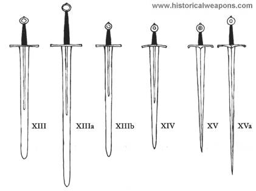
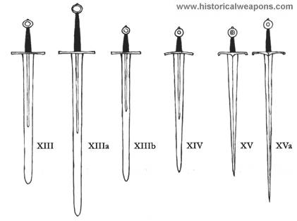

Kalavijas - Simboliai | Horoskopai.lt
2020.10.29 10:31

Horoskopai.lt Dienos Rytojaus Savaitės Mėnesio 2020 Metų ♥ Meilės 🉠Kinų € ASMENINIS Vardadieniai Horoskopai Simboliai Kalavijas
Kalavijas
Simboliai Komentarų: 0 2015/09/26 admin Nei kaip ginklas, nei kaip simbolis nėra labai senas, nes jį buvo galima pagaminti tik pradedant bronzos periodu (Pietų Amerikos miškuose gyvenusių indėnų mediniai „kalavijai-vėzdai“ veikiau buvo ginklas mušti nei kirsti mūsų supratimu).
Cherubinas (angelas), su ugniniu arba liepsnojančiu kalaviju saugantis rojaus vartus, kai buvo išvaryti nusidėję protėviai, patvirtina, kad Biblijoje aprašytas faktas nesiekia tikrosios priešistorės. Bronzos epochos kalavijai dažnai būdavo gausiai puošiami, taigi jie atlikdavo ne vien „profanišką“ funkciją. Germanų kraštuose su kalavijais būdavo šventinami ginklų šokiai, o vardai, kuriuos duodavo sakmių herojai kalavijams (Balmungas, Nagelringas ir kt.), teikia pagrindo spėti, kad jiems būdavo priskiriama magiška simbolinė galia. Viduramžiais į riterius įšventindavo paliečiant kalavijo smaigaliu. Lovoje tarp vyro ir moters padėtas kalavijas laikomas skaistybės (signum castitatis) simboliu.
Egiptietiškų faraono Ramzio laikų pilonų ornamentuose faraonas vaizduojamas ritualine poza pakėlęs ranką, kad sugriebtų kalaviją, kurį jam įteikia Dievas: pjautuvo formos kalavijas „chopeš“ duoda pagrindo manyti apie azijietišką įtaką. Ilgus kalavijus turėdavo samdyti kariai (â€Å¡irdana“) iš šiaurės kraštų.
Senovės Kinijoje demonus išvarančius kalavijus rankose laikė magai, taip pat egzistavo tradicija „vyriškus“ ir „moteriškus“ kalavijus liedinti iš mitologinio metalą ryjančio kiškio kepenų ir inkstų Kuenlun kalnuose. Jei moteris sapnuoja, kad išsitraukia kalaviją, vadinasi, pagimdys sūnų (psichologijoje kalavijas simbolizuoja vyriškąjį pradą falą); turėti kalaviją kaip nuosavybę moterų sapnuose reiškia laimę, o vyrų sapnuose į vandenį krentantis kalavijas pranašauja žmonos mirtį. — Japonijoje gerai įvaldyti kovos su kalaviju meną galėjo samurajus, kuris turi dvi seseris: ilgas kalavijas katana kovai, trumpas vakitaši durtynėms ir ritualinei savižudybei (sepuku, Europoje žinoma kaip charakiris). Kalavijų kalviai privalėjo duoti įvairius susilaikymo įžadus, nes jų darbas turėjo sakralinį pobūdį. Išgraviruoti lapai tarp rankenos ir ašmenų (tsuba) puošti gausia ornamentika Å iandien kalavijais kaunasi (iai-do) tik treniravimosi tikslais; pratimai su bambukiniais kalavijais (kendo) kildinami iš samurajų kovų kalavijais. Sintoistų mite išgarsintą kalaviją audrų dievas Susano-o ištraukė iš savo nužudytos aštuongalvės gyvatės uodegos. Jo vardas yra Ame no murakomo no tsuguri ir kartu su perlais bei veidrodžiu priklauso japonų imperijos lobiams.
Vakarų pasaulyje kalavijas vaizduojamas kaip arkangelo Mykolo ginklas. Jis taip pat yra karaliaus Dovydo ir Juditos bei Juditos, kuri kalaviju nukirto galvą Holofernui, atributas. Evangelijoje pagal Joną iš Kristaus burnos išlenda kalavijas (1, 16) kaip simbolis nenugalimos jėgos ir dangiškosios teisybės, kaip žaibas perskrodžiančios dangų. Kaip nepriklausomybės ženklą kalaviją nešiojosi šv. Steponas iš Vengrijos ir Karolis Didysis, kaip kankinio mirties simbolį — šv. Paulius, Jokūbas Vyresnysis, Tomas Beketas, šv. Kotryna ir Liucija. Luko evangelijoje (2, 35) kalavijas perveria Marijos širdį kaip pranašystė, jog ateis didelis skausmas. Septyni vienodi kalavijai, vaizduojami baroko ikonografijoje, nurodo „septynis Marijos skausmus“.
Bendrąja prasme kalavijas simbolizuoja vitališką jėgą ir yra karo dievų atributas (Marsas), Perkūno žaibo simbolis, o Vakaruose — prievartos simbolis, kur „dviejų seserų mokslas“ simbolizuoja dvasinę ir pasaulietinę viešpatiją. Pagal popiežiaus doktriną (Inokentijaus III) Bažnyčios vyriausioji valdžia privalėjo įteikti „pasaulietinį kalaviją“ teisėtam valdovui kaip feodui. — Tik išskirtiniu atveju pamatysi griežtą vyriškumo simbolį kalaviją moters rankose. Žana d’Ark („Orleano mergelė“), 1431 sudeginta ant laužo, išgarsėjo (jau minėtai) šv. Kotrynai parodžius, kur po viena kaimo bažnyčia yra pakastas kalavijas: „Kalavijas buvo po žeme, visiškai surūdijęs, ant jo penki kryžiai. Balsai man pasakė, kad jis ten yra Aš liepiau parašyti tenykštei dvasininkijai ir paprašiau jį perleisti man. Jie man jį ir atsiuntė“ (cituojama pagal A. Hollį iš teismo aktų). Po didelių pergalių kovotoja (1920 paskelbta šventąja) turėjo žūti vien tik per tą kalaviją, kurį ji pasiėmė (žr. Evangelija pagal Matą 26, 52).
Susiję straipsniai
Tags: Simbolių reikšmėsParašykite komentarą Atšaukti atsakymą
Kategorijos
Akmenys (75) Astrologija (93) Būrimai ir pranašystės (33) Burtai ir magija (20) Feng shui (8) Grožis ir sveikata (32) Įdomybės (36) Įvairūs horoskopai (41) Mėnesiai (12) Metalai (7) Metų laikai (4) Mistika (18) Numerologija (13) Pavardžių reikšmės (34) Planetos (15) Prietarai (30) Sapnai (10) Sapnininkas (1 730) Savaitės dienos (8) Savybės (3) Simboliai (518) Spalvos (29) Stichijos (10) Suderinamumas (172) Šventės (310) Valandos (15) Vardų reikšmės (537) Zodiako ženklai (12) Zodiako ženklai (kinų) (13)Naujausi įrašai
Įdomiausios astrologinės knygos, kurias verta perskaityti Socialinis atsiskyrimas pagal Jūsų horoskopo ženklą, kaip nepasimesti Zodiako ženklai karantino metu Tryliktas zodiako ženklas gyvatnešys Savaitės horoskopas corona viruso metuPopuliariausi įrašai
Metų lentelė pagal kinų kalendorių - 362 990 peržiūrėta Suderinamumo horoskopas - 274 827 peržiūrėta Skorpionas - 163 226 peržiūrėta Vandenis - 163 112 peržiūrėta Avinas - 160 291 peržiūrėta Vėžys - 153 342 peržiūrėta Dvyniai - 152 894 peržiūrėta Šaulys - 148 187 peržiūrėta Žuvys - 144 415 peržiūrėta Jautis - 143 718 peržiūrėta Svarstyklės - 141 576 peržiūrėta Mergelė - 136 256 peržiūrėta Liūtas - 135 753 peržiūrėta Ožiaragis - 135 735 peržiūrėta Šuo - 105 066 peržiūrėta Kiaulė - 101 156 peržiūrėta Visi vardai pagal abėcėlę - 100 651 peržiūrėta Nedarbo dienos 2020 metais - 91 014 peržiūrėta Prietarai apie paukšÄius - 84 736 peržiūrėta Simbolių reikšmės - 84 719 peržiūrėtaNaujausi įrašai
Įdomiausios astrologinės knygos, kurias verta perskaityti Socialinis atsiskyrimas pagal Jūsų horoskopo ženklą, kaip nepasimesti Zodiako ženklai karantino metu Tryliktas zodiako ženklas gyvatnešys Savaitės horoskopas corona viruso metuNaujausi komentarai
Audra apie Juodoji magija: Kaip apsiginti? Andrius apie Dvyniai ir Svarstyklės Emilis apie EMILIS Ne apie JOKŪBAS Morta apie Įdomiausios astrologinės knygos, kurias verta perskaitytiDraugai
Anglų kalbos kursai Norvegų kalbos kursai Vokieciu kalbos kursaiKontaktai
Email Facebook TwitterGairės
Akmenys pagal horoskopą Akmenys pagal zodiako ženklus Akmenys pagal zodiaką Akmenų reikšmės Balandžio mėnesio šventės Berniukų vardai Gegužės mėnesio šventės Graikiški vardai Horoskopo ženklų suderinamumas Horoskopo ženklų tinkamumas Kovo mėnesio šventės Lapkričio mėnesio šventės Lietuviški vardai Likimo ženklai Lotyniški vardai Mergaičių vardai Partnerių suderinamumas Partnerių tinkamumas Pavardžių kilmė Pavasario šventės Populiariausios pavardės lietuvoje Poros suderinamumas Poros tinkamumas Pranašingi ženklai Prietarų reikšmės Rudens šventės Rugsėjo mėnesio šventės Sapnų reikšmės Simbolių reikšmės Spalio mėnesio šventės Spalvos pagal zodiako ženklą Spalvų reikšmės Suderinamumas pagal horoskopą Tinkamumas pagal horoskopą Vardai berniukams Vardai mergaitėms Vardų reikšmės Vasaros šventės Vokiški vardai Zodiako suderinamumas Zodiako ženklų suderinamumas Zodiako ženklų tinkamumas Å venti vardai Žiemos šventės Žydiški vardai © 2009 - 2020 Horoskopai.lt - dienos, rytojaus, savaitės, mėnesio, metų horoskopai.- Kalavijas - vertimas - Lietuvių-Anglų Žodynas - Glosbe
- Vyksta tarptautinės SOP pratybos „Liepsnojantis kalavijas ...
- kalavijas - lithuanian_language.enacademic.com
- kalavijas - išsamiai DELFI.lt
- Kalavijas - vertimai, sinonimai, gramatika, statistika ...
- Likimo kalavijas - Andrzej Sapkowski | VAGA
- Liepsnojantis kalavijas. Legenda - Lietuvos kariuomenė
- Daumanto kalavijas - Pagrindinis
- Kalavijas (schiavona) | Nacionalinis muziejus Lietuvos ...
- Sapkowski, Andrzej – Likimo kalavijas (FKB 1) – Mainyk ...
- Kalavijas - vertimas - Lietuvių-Anglų Žodynas - Glosbe
Jei aš kalavijas, tai nukaltas iš stiklo. Nes pradedu aižėti… Viena, ką Mara Barou tikrai žino – ji yra kitokia. Maros kraujas raudonas kaip prasčiokų, bet ji turi gebėjimų, būdingų kilmingiesiems sidabriniams: gali valdyti žaibą.
- Vyksta tarptautinės SOP pratybos „Liepsnojantis kalavijas ...
kalavìjas sm. (2) 1. SD41,147, MŽ, R, KlG2, [K], J.Jabl, M, NdŽ plieninis, ilgas, siauras, aštriais ašmenimis kertamasis ginklas, kardas: Žemaitis už ...
- kalavijas - lithuanian_language.enacademic.com
Kalavijas bulgariškai. Vertimas - Žodynas: dictionaries24.com. Kalbų žodynas: lietuvių » bulgarų
- kalavijas - išsamiai DELFI.lt
Kalavijas (schiavona) Venetas, Italija XVII a. I p. Geležis, oda, medis; drožyba, kalstymas Ilgis 106 cm Inv. Nr. VR-365 Eksponatą 2008 m. rugsėjo 20 d. iš Riccardo Mannino (Merkatalė in Val di Peza, Italija) būsimam Valdovų rūmų muziejui įsigijo Lietuvos dailės muziejus. 2009 m. gegužės 27 d. jis perduotas Nacionaliniam muziejui Lietuvos Didžiosios Kunigaikštystės valdovų ...
- Kalavijas - vertimai, sinonimai, gramatika, statistika ...
Likimo kalavijas . Maginės fantastikos knygų ciklo „Raganius“ autorius Andrzej Sapkowski gimė Lenkijoje 1948 m. Išgarsėjęs dar pirmu apsakymu „Raganius“, jis parašė apie raganių Geraltą tris apsakymų rinkinius ir penkis romanus, jie išversti į daugelį kalbų. 2007 m. pagal „Raganiaus“ ciklą sukurtas kompiuterinis žaidimas „The Witcher“ irgi sulaukė pasaulinės ...
- Likimo kalavijas - Andrzej Sapkowski | VAGA
Taip prieštarų sandūroje gimstantis, vertybėmis išgaląstas mąstymas ir matymas - liepsnojantis Cherubinas, mūsų kariuomenės strategijos ir lyderystės kalavijas - taps viena stipriausių, mano gyvenimui kryptį suteikiančių, jėgų, kurias užtvirtins galutinė plieno ornamentika: Trispalvė Lietuvos Ugnis.
- Liepsnojantis kalavijas. Legenda - Lietuvos kariuomenė
Kalavijas vertimo žodynas lietuvių - anglų Glosbe, žodynas, nemokamai. Peržiūrėti milions žodžius ir frazes visomis kalbomis.
- Daumanto kalavijas - Pagrindinis
Vakarų pasaulyje kalavijas vaizduojamas kaip arkangelo Mykolo ginklas. Jis taip pat yra karaliaus Dovydo ir Juditos bei Juditos, kuri kalaviju nukirto galvą Holofernui, atributas. Evangelijoje pagal Joną iš Kristaus burnos išlenda kalavijas (1, 16) kaip simbolis nenugalimos jėgos ir dangiškosios teisybės, kaip žaibas perskrodžiančios ...
- Kalavijas (schiavona) | Nacionalinis muziejus Lietuvos ...
Žodis kalavijas angliškai verčiamas - sword. Lietuvių anglų žodynas. Anglų - Lietuvių; Lietuvių - Anglų; Išversti. Žodžių indeksas: a ...
- Sapkowski, Andrzej – Likimo kalavijas (FKB 1) – Mainyk ...
Labai tikroviškas kalavijasDydis: 80 cmDerinkite su riterio karnavalo kostiumu. Puikiais tiks ir Žiedų valdovo tematikai.Nepamirškite dirbtino kraujo ir riterio vertybių, taip pat pasitreniruokite, kaip nudobti drakoną
Jei aš kalavijas, tai nukaltas iš stiklo. Nes pradedu aižėti… Viena, ką Mara Barou tikrai žino – ji yra kitokia. Maros kraujas raudonas kaip prasčiokų, bet ji turi gebėjimų, būdingų kilmingiesiems sidabriniams: gali valdyti žaibą.
kalavìjas sm. (2) 1. SD41,147, MŽ, R, KlG2, [K], J.Jabl, M, NdŽ plieninis, ilgas, siauras, aštriais ašmenimis kertamasis ginklas, kardas: Žemaitis už ...
Kalavijas bulgariškai. Vertimas - Žodynas: dictionaries24.com. Kalbų žodynas: lietuvių » bulgarų
Kalavijas (schiavona) Venetas, Italija XVII a. I p. Geležis, oda, medis; drožyba, kalstymas Ilgis 106 cm Inv. Nr. VR-365 Eksponatą 2008 m. rugsėjo 20 d. iš Riccardo Mannino (Merkatalė in Val di Peza, Italija) būsimam Valdovų rūmų muziejui įsigijo Lietuvos dailės muziejus. 2009 m. gegužės 27 d. jis perduotas Nacionaliniam muziejui Lietuvos Didžiosios Kunigaikštystės valdovų ...
Likimo kalavijas . Maginės fantastikos knygų ciklo „Raganius“ autorius Andrzej Sapkowski gimė Lenkijoje 1948 m. Išgarsėjęs dar pirmu apsakymu „Raganius“, jis parašė apie raganių Geraltą tris apsakymų rinkinius ir penkis romanus, jie išversti į daugelį kalbų. 2007 m. pagal „Raganiaus“ ciklą sukurtas kompiuterinis žaidimas „The Witcher“ irgi sulaukė pasaulinės ...
Taip prieštarų sandūroje gimstantis, vertybėmis išgaląstas mąstymas ir matymas - liepsnojantis Cherubinas, mūsų kariuomenės strategijos ir lyderystės kalavijas - taps viena stipriausių, mano gyvenimui kryptį suteikiančių, jėgų, kurias užtvirtins galutinė plieno ornamentika: Trispalvė Lietuvos Ugnis.
Kalavijas vertimo žodynas lietuvių - anglų Glosbe, žodynas, nemokamai. Peržiūrėti milions žodžius ir frazes visomis kalbomis.
Vakarų pasaulyje kalavijas vaizduojamas kaip arkangelo Mykolo ginklas. Jis taip pat yra karaliaus Dovydo ir Juditos bei Juditos, kuri kalaviju nukirto galvą Holofernui, atributas. Evangelijoje pagal Joną iš Kristaus burnos išlenda kalavijas (1, 16) kaip simbolis nenugalimos jėgos ir dangiškosios teisybės, kaip žaibas perskrodžiančios ...
Žodis kalavijas angliškai verčiamas - sword. Lietuvių anglų žodynas. Anglų - Lietuvių; Lietuvių - Anglų; Išversti. Žodžių indeksas: a ...
Labai tikroviškas kalavijasDydis: 80 cmDerinkite su riterio karnavalo kostiumu. Puikiais tiks ir Žiedų valdovo tematikai.Nepamirškite dirbtino kraujo ir riterio vertybių, taip pat pasitreniruokite, kaip nudobti drakoną
 
